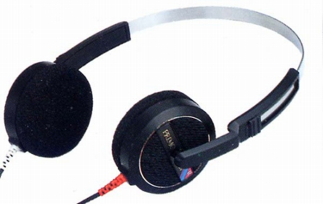

CD-3

■価格 7,600円■型式 ダイナミック型オープンエアタイプ■振動板 39.5�oドーム型■インピーダンス 35Ω■再生周波数帯域 10-20,000Hz■許容入力 50mW■感度 103ｄB/mW■コード 3m ステレオミニプラグ/6.3mmアダプター付属■重量 92g（コード含まず）■発売 1986年■販売終了 1995〜96年頃■備考 サマリュウムコバルト磁石採用。広告によれば磁束密度は10000ガウス＝1テスラ。
プリモのインデックスヘ